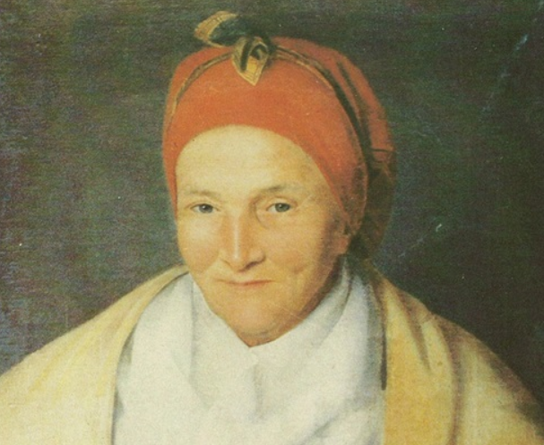

Mme desbassyns
Madame Desbassayns, de son vrai nom Élisabeth Patrix, née en 1755, est l’une des figures les plus marquantes — et les plus controversées — de l’histoire de l’île de La Réunion. Mariée à Henri Paulin Panon Desbassayns, riche propriétaire terrien, elle devient à la fins grandes propriétaires du XVIIIᵉ siècle l’une des pluesclavagistes de l’île Bourbon. Mariée à Henri Paulin Panon Desbassayns, riche propriétaire terrien, elle devient à la fins grandes propriétaires XVIIIᵉ siècle l’une des pluesclavagistes